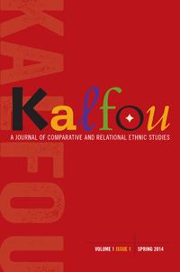

Kalfou is published by Temple University Press for the Center for Black Studies Research at the University of California, Santa Barbara
Kalfou is published by Temple University Press for the Center for Black Studies Research at the University of California, Santa Barbara


 Kalfou is published by Temple University Press for the Center for Black Studies Research at the University of California, Santa Barbara
Kalfou is published by Temple University Press for the Center for Black Studies Research at the University of California, Santa Barbara

|  |
KalfouA Journal of Comparative and Relational Ethnic StudiesVolume 1, Issue 1
|
Kalfou is the Haitian Kreyòl word for “crossroads.” It is a scholarly journal focused on social movements, social institutions, and social relations. We seek to build links among intellectuals, artists, and activists in shared struggles for social justice. The journal seeks to promote the development of community-based scholarship in ethnic studies among humanists and social scientists and to connect the specialized knowledge produced in academe to the situated knowledge generated in aggrieved communities.
Senior Editor:
George Lipsitz, University of California, Santa Barbara
Associate Editors:
Enrique Bonus, University of Washington, Seattle;
Maria Herrera-Sobek, University of California, Santa Barbara;
Roberta Hill, University of Wisconsin, Madison;
Tricia Rose, Brown University
Book Review Editor:
Paul Ortiz, University of Florida, Gainesville
Founding Editors:
Claudine Michel, University of California, Santa Barbara;
Melvin Oliver, University of California, Santa Barbara
Managing Editor:
Rose Elfman, University of California, Santa Barbara
Published twice per year
ISSN 2151-4712
E-ISSN 2372-0751
Subscription Rates:
Individual | $30.95
Institution | $125.00
Subscription, submission, and advertising information will be available in the Fall.
See Volume 1, Issue 1 at tupjournals.temple.edu.
Join the mailing list at tupjournals@temple.edu
© 2015 Temple University. All Rights Reserved. This page: http://www.temple.edu/tempress/titles/2358_reg.html.